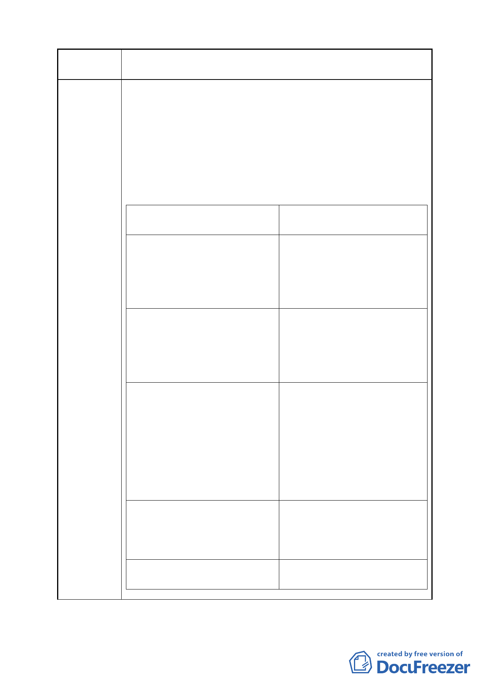

案 名 變更臺北市南港區鐵路地下化沿線土地主要計畫案
建議辦法
議理由
建議辦法
一、本基地為本企業之發源地，期
待能紀念先人開拓史蹟，達成
優質空間品質要求，並塑造成
為南港地標，為南港地區的再
發展創造典範。
1. 重劃後的基地鄰接 0.5 公頃公
園。
2. 本企業興闢與認養 0.5 公頃公
園，其興闢費用抵重劃負擔。
二、本案捐地後基地規模變小，設
計自由度受限，未能滿足本企 捐地比例降至 40%，扣除五千平方
業的期待(保留祖先的土地， 米公園用地面積外，並可將捐地
以興建高品質、有紀念意義的 購回。
設施)。
三、本案重劃後建蔽率為 45%，捐
地後，建築面積與開挖面積太
小，使得建築量體無法自由組
合配置，只能垂直往上發展，
建蔽率提高為 65%。
減損塑造空間品質彈性。而地
下室開挖層數必須往下發
展，增加開發成本，缺乏效
率，浪費資源。
四、本案由工業用地捐地後變更為
商 業 用 地 ， 其 容 積 率 訂 為 容積率比照商業區最低標準，即
255%，遠低于現行商業用地之 商一之 360%
標準。
五、南港輪胎適用停車獎勵，但本
比照南港輪胎得適用停獎。
說明會並未將停車獎勵納入。
- 19 -